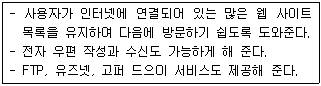
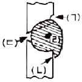
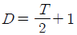
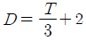
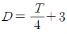
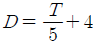

초음파비파괴검사기사(구) (2010-07-25 기출문제)
1과목: 초음파탐상시험원리
1. 초음파탐상시험시 미세한 불연속을 찾기 위한 조건으로 가장 적합한 것은?
- 관통법을 사용한다.
- 크기가 작은 탐촉자를 사용한다.
- 가능한 한 높은 주파수의 탐촉자를 사용한다.
- 가능한 한 낮은 주파수의 탐촉자를 사용한다.
(정답률: 알수없음)

2. 초음파탐상시험시 주의해야 할 사항 중 틀린 것은?
- 수동 검사시 충분한 경험을 가진 검사자가 검사한다.
- 표준시험편과 대비시험편을 사용하여 비교 평가한다.
- 초음파 전달효율을 높이기 위해 접촉매질을 두껍게 바른다.
- 방사선투과시험과는 달리 외부인의 출입을 제한하지 않아도 된다.
(정답률: 알수없음)
3. 경사각 탐촉자를 사용할 때 매질1 에서 매질2 로 초음파가 입사할 때 입사각이 2차 임계각보다 크게 되면 매질2 내에는 어떤 파가 존재하는가?
- 종파만 존재한다.
- 횡파만 존재한다.
- 종파와 횡파가 함께 존재한다.
- 종파와 횡파 모두 존재하지 않는다.
(정답률: 알수없음)
4. 알루미늄과 강의 계면에서 음압반사율은 약 몇 %인가? (단, 알루미늄 : VL = 6320m/s, 밀도 = 2700kg/m3, 강: VL= 5920m/s, 밀도 = 7850kg/m3 이다.)
- 13%
- 46%
- 75%
- 100%
(정답률: 알수없음)
5. 수직탐상시험 할 때 탐촉자의 선정으로 잘못된 것은?
- 높은 주파수의 탐촉자는 주사 피치를 작게 하여야한다.
- 결함의 투영 면적이 최대가 되는 방향으로 탐상방향을 선정한다.
- 작은 결함을 검출하기 위하여는 주파수가 높은 탐촉자를 선택한다.
- 시험대상 부위까지의 최단거리가 근거리음장한계 이하가 되도록 진동자의 크기를 결정한다.
(정답률: 알수없음)
6. 두께 25mm인 강판을 굴절각이 70º 인 탐촉자로 탐상한 결과 결함에 대한 빔행정 (beam path distance)이 58.5mm이었다면 이 결함의 깊이는 약 몇 mm 인가?
- 8.5
- 14.9
- 20.0
- 24.9
(정답률: 알수없음)
7. 다른 비파괴검사법과 비교한 침투탐상시험의 장점에 대한 설명으로 틀린 것은?
- 적용 방법이 비교적 간단하다.
- 모든 불연속의 검출이 가능하다.
- 불연속에 대한 평가가 비교적 쉽다.
- 원리가 비교적 간단하고 이해하기 쉽다.
(정답률: 알수없음)
8. 전기 회로에 교류를 흘렸을 경우 전류의 흐름을 방해하는 정도를 나타내는 용어는?
- 인덕턴스
- 리액턴스
- 임피던스
- 초기펄스
(정답률: 알수없음)
9. 광학적 성질을 이용한 스트레인 측정법만의 조합으로 옳은 것은?
- X선회절법, 중성자회절법
- 응력도료법, Thermography
- 전기저항법, 와전류탐상법
- 광탄성피막법, 모아레(Moire)법
(정답률: 알수없음)
10. 적절한 자화가 이루어지지 않기 때문에 자분탐상시험으로 검사가 곤란하며, 투자율이 공기보다 다소 높은 재질을 무엇이라 하는가?
- 상자성체
- 초자성체
- 강자성체
- 비자성체
(정답률: 알수없음)
11. 방사선투과시험과 비교하여 초음파탐상시험의 장점을 설명한 것으로 옳은 것은?
- 한 면만으로도 탐상이 가능하다.
- 시험체의 표면이 거친 경우에 유리하다.
- 탐상을 위한 접촉매질이 필요하지 않다.
- 탐상의 기준이 되는 표준시험편이나 대비시험편이 필요하지 않다.
(정답률: 알수없음)
12. 강자성체가 외부의 자화력에 의해 더 이상 자화되지 않는 온도를 무엇이라 하는가?
- 임계온도
- 큐리온도
- 변태온도
- 전이온도
(정답률: 알수없음)
13. 각종 비파괴검사에 따른 적용법이 잘못 연결된 것은?
- 방사선투과시험 : 용접부내 기공 검출
- 초음파탐상시험 : 강판의 라미네이션 검출
- 와전류탐상시험 : 선재의 표면결함을 고속으로 검출
- 자분탐상시험 : 오스테나이트계 스테인리스강의 표면균열 검출
(정답률: 알수없음)
14. 누설검사법 중 가열양극 할로겐법의 장점이 아닌것은?
- 사용이 간편하고, 휴대용이다.
- 대기압 하에서 작업할 수 있다.
- 모든 추적 가스에 응답이 가능하다.
- 기름에 막혀 있는 누설을 검출할 수 있다.
(정답률: 알수없음)
15. 자분탐상시험과 비교한 침투탐상시험의 특징으로 틀린 것은?
- 조작 단계의 독립적이며, 각각의 단계별 절차를 지키는 것이 중요하다.
- 표면으로 열린 결함이라도 결함 안에 이물질로 채워져 있으면 검출하기 어렵다.
- 일반적으로 자분탐상시험은 시간이 경과하여도 지시모양이 변하지 않으나 침투탐상시험은 변한다.
- 자분탐상시험에 비해 침투탐상시험은 온도의 영향을 적게 받으므로 온도변화에 의한 탐상이 유리하다.
(정답률: 알수없음)
16. 핵연료봉과 같은 방사성 물질의 결함 검사에 적합한 비파괴검사법은?
- 누설시험
- 초음파탐상시험
- 중성자투과시험
- 와전류탐상시험
(정답률: 알수없음)
17. 와전류탐상시험이 가능하지 않은 대상물은?
- 고무 막대
- 강철 막대
- 구리 막대
- 알루미늄 막대
(정답률: 알수없음)
18. 누설검사에 사용되는 온도계 중 비접촉식 온도계는?
- 색온도계
- 유리온도계
- 저항온도계
- 열전온도계
(정답률: 알수없음)
19. 일반적으로 검사 후 결함의 크기 및 형상을 장기적으로 보전하기 적합하여 많이 사용되는 비파괴검사법은?
- 누설시험
- 침투탐상시험
- 자분탐상시험
- 방사선투과시험
(정답률: 알수없음)
20. 파괴시험을 대신하여 비파괴시험이 급속히 보급되고 있는 이유로 적합하지 않은 것은?
- 검사의 경제성
- 적용 범위의 확대
- 검사 결과의 신속성
- 결함 원인 판정이 용이
(정답률: 알수없음)
2과목: 초음파탐상검사
21. 음향렌즈를 부착한 집속형 (focused) 탐촉자의 장점이 아닌 것은?
- 분해능이 증대된다.
- 표면형상 영향이 감소된다.
- 표면거칠기 영향이 증대된다.
- 작은 결함 검출감도가 증대된다.
(정답률: 알수없음)
22. 초음파탐상시 에코높이를 26dB 높였다면 도형은 처음의 약 몇 배로 커지는가?
- 10배
- 15배
- 20배
- 25배
(정답률: 알수없음)
23. STB-A2 시험편의 평저공이 아닌 것은?
- Φ1×1
- Φ2×2
- Φ3×3
- Φ4×4
(정답률: 알수없음)
24. 경사각탐상시 표준 및 대비시험편의 사용에 대한 설명으로 틀린 것은?
- RB-4 를 DAC 곡선의 작성에 사용한다.
- RB-A7 은 길이이음 용접부에 대하여 사용한다.
- STB-A3 를 이용하여 탐촉자의 입사점과 굴절각을 측정한다.
- 50mm 측정범위는 STB-A1 의 100R 면을 반사원으로 사용한다.
(정답률: 알수없음)
25. 탐촉자를 이동한 바로 밑의 단면도를 얻는 초음파 탐상의 단면표시 방법은?
- A 스캔
- B 스캔
- C 스캔
- MA 스캔
(정답률: 알수없음)
26. 펄스반사법 탐상장치를 사용하여 평판 맞대기 강용접부를 경사각 탐촉자로 탐상할 때 측정범위를 조정하기 위하여 STB-A7963(Miniature Block) 표준시험편을 사용했다. 초음파 빔의 방향이 곡률반경 25mm 쪽 곡면을 향하였을 때 나타나는 에코가 아닌 것은?
- 25mm 위치의 에코
- 50mm 위치의 에코
- 100mm 위치의 에코
- 175mm 위치의 에코
(정답률: 알수없음)
27. 펄스반사법에 의한 탐상장치를 사용하여 두께 150mm 의 봉강을 수직탐촉자로 탐상할 때 어떤 부분에서 저면 에코의 높이가 낮아졌다. 그 원인이 아닌 것은?
- 봉강의 두께가 작아졌다.
- 봉강 내부에 흠이 존재한다.
- 저면의 표면 상태가 나쁘다.
- 접촉 표면의 상태가 나쁘다.
(정답률: 알수없음)
28. 초음파탐상용 시험편에서 가로 드릴구멍을 인공결함으로 가공할 때 가공 정밀도가 반사 에코높이에 가장 큰 영향을 주는 것은?
- 구멍 직경
- 구멍 길이
- 탐상면의 거칠기
- 탐상면과의 평행도
(정답률: 알수없음)
29. 후판의 라미네이션 결함 검출에 가장 효과적인 검사법은?
- 수직탐상법
- 탠덤탐상법
- 표면파탐상법
- 경사각탐상법
(정답률: 알수없음)
30. 같은 크기의 결함 중 초음파탐상검사로 가장 발견하기 쉬운 결함은?
- 구형의 공동
- 이물질의 개재
- 초음파 진행방향과 나란한 균열
- 초음파 진행방향과 수직인 균열
(정답률: 알수없음)
31. 방해 에코로서 결정입계에 주로 발생되며 오스테나이트계 스테인리스강 용접부를 고감도로 탐상할 때 많이 나타나는 에코는?
- 잔향에코
- 임상에코
- 결정에코
- 쐐기내에코
(정답률: 알수없음)
32. 초음파 탐상기의 송신기에 대한 기능으로 옳은 것은?
- 시간축을 제어한다.
- 탐상 게이트를 설정한다.
- 수신된 신호를 증폭한다.
- 고전압 전기펄스를 발생시킨다.
(정답률: 알수없음)
33. 결정입자가 조대한 조직의 금속재료를 초음파탐상검사 할 때 초음파의 감쇠를 줄이기 위한 방법으로 적합한 것은?
- 탐상 주파수를 높인다.
- 횡파 전용 탐촉자로 탐상한다.
- 접촉법에서 수침법으로 검사 방법을 변경한다.
- 열처리를 하여 조직을 미세화 시킨 후 검사한다.
(정답률: 알수없음)
34. 초음파 탐촉자에서 사용되는 압전재료 중 송신효율이 가장 우수한 것은?
- 황산리튬
- 티탄산바륨
- 지르콘산납
- 니오비움산납
(정답률: 알수없음)
35. 초음파탐상시험법의 용도에 관한 설명으로 틀린것은?
- 표면파 탐상법은 표면결함검출에 사용된다.
- 판파 탐상법은 얇은 판의 결함 탐상에 사용된다.
- 경사각 탐상법은 용접부, 관재 등의 두께측정에 사용된다.
- 수직 탐상법은 주물 및 압연물의 내부결함검출에 사용된다.
(정답률: 알수없음)
36. 주강품과 단강품을 초음파탐상검사 하였을 때 감쇠 현상을 설명한 것으로 옳은 것은?
- 일반적으로 주강품이 단강품보다 감쇠가 크다.
- 일반적으로 단강품이 주강품보다 감쇠가 크다.
- 주강품, 단강품 모두 감쇠가 일어나지 않는다.
- 일반적으로 주강품, 단강품의 감쇠 정도는 같다.
(정답률: 알수없음)
37. 배관의 원주 용접부를 경사각탐상으로 0.5 스킵 범위내에서 검사하였을 때 검출하기 어려운 결함은? (단, 배관 내면에서는 검사하기 어려운 경우이다.)
- 기공
- 슬래그
- 용입부족
- 외면 언더컷
(정답률: 알수없음)
38. 두께 25mm인 용접부위를 굴절각 45°의 탐촉자로 2스킵까지 경사각탐상 할 때 2스킵 거리 (Y2.0s)는 몇 mm인가?
- 100
- 125
- 150
- 200
(정답률: 알수없음)
39. 어떤 시험체를 탐상해 보니 CRT 스크린의 100% FSH 를 초과하는 아주 큰 에코를 가진 결함을 발견하였다. 이 에코높이가 몇 % FSH 인지 알아보기 위하여 게인을 조절하니 7dB 를 내려야 100% FSH 에 만남을 알 수 있었다. 이 에코 높이는 약 몇 % FSH 인가?(단, FSH 는 full screen height 의 약어이다.)
- 125% FSH
- 150% FSH
- 185% FSH
- 225% FSH
(정답률: 알수없음)
40. 초음파 탐상기가 갖추어야 할 주요 3대 성능은?
- 증폭 직선성, 분해능, 최대 감도
- 증폭 직선성, 분해능, 시간축 직선성
- 증폭 직선성, 분해능, 브라운관의 크기
- 증폭 직선성, 브라운관의 크기, 브라운관의 밝기
(정답률: 알수없음)
3과목: 초음파탐상관련규격및컴퓨터활용
41. 보일러 및 압력용기에 대한 표준초음파탐상검사(ASME Sec.V Art.23 SA-435)에는 강판의 수직빔 탐상의 표준을 규정하고 있다. 규격에서 정한 적용 재료로 옳은 것은?
- 두께 10mm 이상인 특수용 클래드 강판 및 합금강판
- 두께 10mm 이상인 특수용 압연된 탄소강판 및 합금강판
- 두께 6.25mm 이상인 압연된 완전 킬드 탄소강판 및 합금강판
- 두께 12.5mm 이상인 압연된 완전 킬드 탄소강판미 합금강판
(정답률: 알수없음)
42. 초음파탐상 시험용 표준시험편(KS B 0831)에서 STB-N1표준시험편은 어떤 경우에 사용하는가?
- 수직탐촉자의 분해능 측정에 사용된다.
- 경사각탐촉자의 굴절각 측정에 사용된다.
- 수직탐촉자의 탐상감도 조정에 사용된다.
- 곡률이 있는 시험재의 탐상시 경사각탐촉자의 원점 측정에 사용된다.
(정답률: 알수없음)
43. 건축용 강판 및 평강의 초음파탐상시험에 따른 등급분류와 판정 기준(KS D 0040)에 따라 두께 40mm 일때 수직탐촉자로 탐상감도를 설정할 경우 STB-N1에서 에코높이를 몇 % 에 맞추는가?
- 25%
- 50%
- 80%
- 100%
(정답률: 알수없음)
44. 강용접부의 초음파탐상 시험방법(KS B 0896)에 따른 경사각탐상의 에코높이 구분선 작성시 사용되는 시험편으로 옳은 것은?
- STB-A2 ø1x1mm
- STB-A2 ø2x2mm
- STB-A2 ø4x4mm
- STB-A2 ø8x8mm
(정답률: 알수없음)
45. 보일러 및 압력용기의 재료에 대한 초음파탐상검사(ASME Sec.V Art.5)에서 접촉법인 경우, 교정시험편과 시험체 표면간의 온도차는 얼마까지 허용되는가?
- 10℉(5.6℃)
- 15℉(8.3℃)
- 20℉(11.1℃)
- 25℉(13.9℃)
(정답률: 알수없음)
46. 보일러 및 압력용기에 대한 초음파탐상검사(ASME Sec.V Art.4)에 따른 탐상장비 중 스크린높이 직선성에 대한 설명으로 옳은 것은?
- 게인을 조정하여 큰 쪽 지시가 전체 스크린 높이의 80%가 되도록 설정한다.
- 큰 쪽의 에코높이를 전 스크린 높이의 80% 로부터 20%로 5%씩 연속적으로 감도를 조정한다.
- 판독값은 큰 쪽 에코높이의 80% 이어야 하며, 오차는 전 스크린 높이의 10% 이내이어야 한다.
- 교정시험편에 경사각빔 탐촉자를 위치시켜 1/4T 및 1T 구멍으로부터 두지시간 진폭비가 4:1이 되도록 한다.
(정답률: 알수없음)
47. 강용접부의 초음파탐상 시험방법(KS B 0896)에 따라, 판두께 100mm를 초과하는 평판 이음 용접부를 1탐촉자 경사각 탐상법을 적용하는 경우의 설명으로 옳은 것은?
- 공칭굴절각 45도 만을 사용한다.
- 공칭굴절각 65도 만을 사용한다.
- 공칭굴절각 70도와 45도 또는 60도와 45도를 사용한다.
- 공칭굴절각 70도와 45도 또는 65도와 45도를 사용한다.
(정답률: 알수없음)
48. 강용접부의 초음파탐상 시험방법(KS B 0896)에 따른 경사각용 에코높이 구분선에 관한 설명 중 틀린것은?
- 시험편을 사용하여 작성된 에코높이 구분선과 6dB 씩 다른 에코높이 구분선을 3개 이상 작성한다.
- 에코높이 구분선은 실제로 사용하는 탐촉자를 사용하여 작성한다.
- A2형계 표준시험편을 사용하여 에코높이 구분선을 작성하는 경우, Φ2x2mm의 표준구멍을 사용한다.
- A2형계 표준시험편을 사용하는 경우, 0.5스킵거리 이내의 범위는 0.5스킵의 에코높이로 한다.
(정답률: 알수없음)
49. 강용접부의 초음파탐상 시험방법(KS B 0896)에서 인접한 구분선 작성의 감도차는?
- 2dB
- 6dB
- 9dB
- 12dB
(정답률: 알수없음)
50. 강용접부의 초음파탐상 시험방법(KS B 0896)에 사용되는 대비시험편은 어느 때 사용하는가?
- 감도 조정
- 굴절각 측정
- 입사점 측정
- 측정 범위의 조정
(정답률: 알수없음)
51. 보일러 및 압력용기에 대한 초음파탐상검사(ASME Sec. V Art.4)에 의한 경사각빔 사용을 위한 두께 75mm(3인치)인 기본 교정시험편에 가공되는 드릴 구멍의 깊이(검사 표면에서부터의 깊이)가 아닌 것은?(단, 검사체와 시험편 재질은 동일하며, T는 시험편의 두께이다.)
- T/8
- T/4
- T/5
- 3/4T
(정답률: 알수없음)
52. 보일러 및 압력용기에 대한 초음파탐상검사(ASME Sec. V Art.4)에서 대비시혐편의 재질 구성에 대한 설명으로 옳은 것은?
- 시험체와 서로 상이한 열처리를 한다.
- 시험체와 구분번호(P-번호)가 다른 재질로 한다.
- 시험체와 동일한 재질의 사양과 등급 그리고 열처리를 한다.
- 시험체와 동일한 두께이나 재질은 달라야 하며 열처리를 하지 않아야 한다.
(정답률: 알수없음)
53. 보일러 및 압력용기의 재료에 대한 초음파탐상검사(ASME Sec.V Art.5)에서 니켈합금에 사용되는 접촉 매질은 몇 ppm 이상의 황을 포함하지 않아야 하는가?
- 250
- 500
- 1000
- 2000
(정답률: 알수없음)
54. 초음파탐상시험용 표준시험편(KS B 0831)에서 G형 표준 시험편 중 인접한 시험편 V15-2 와 V15-2.8 을 5MHz, Φ 20mm 탐촉자로 측정할 때 반사원 에코 높이의 dB 차는 얼마 이내이어야 하는가?
- 4.8±1dB
- 5.7±1dB
- 15±1dB
- 18±1dB
(정답률: 알수없음)
55. 강용접부의 초음파탐상 시험방법(KS B 0896)에 따른 시험결과의 분류 방법에서 동일하다고 간주되는 깊이에서 흠과 흠의 간격이 큰쪽의 흠의 지시길이와 같거나 그것보다 짧은 경우는 어떻게 분류하는가?
- 독립 결함으로 긴 쪽 길이를 기준한다.
- 독립 결함으로 짧은 쪽 길이를 기준한다.
- 각각의 흠군으로 간주하고, 그것들을 각각의 흠으로 나누어 흠을 분류한다.
- 동일한 흠군으로 간주하고, 그것들을 간격까지 포함시켜 연속한 흠으로 간주한다.
(정답률: 알수없음)
56. 컴퓨터에서 사용되는 소프트웨어는 응용 소프트웨어와 시스템 소프트웨어로 구분된다. 다음 중 시스템 소프트웨어에 해당하지 않는 것은?
- 운영체제
- 컴파일러
- 유틸리티
- 패키지
(정답률: 알수없음)
57. 컴퓨터 바이러스를 예방하는 방법으로 볼 수 없는 것은?
- 정기적으로 바이러스를 검사한다.
- 항상 최신의 공개 프로그램을 다운로드한다.
- 불법 복사하지 않고 정품을 사용한다.
- COMMAND.COM 파일의 속성을 읽기 전용으로 만든다.
(정답률: 알수없음)
58. 사용자로 하여금 모아놓은 여러 개의 검색엔진 중원하는 검색엔진 하나를 선택해서 검색할 수 있는 것은?
- 메타 검색엔진
- 키워드형 검색엔진
- 디렉토리형 검색엔진
- 로봇 에이전트형 검색엔진
(정답률: 알수없음)
59. 다음이 설명하고 있는 것은?

- 웹 브라우저
- 인터넷 전화
- 전자 상거래
- 인터넷 쇼핑몰
(정답률: 알수없음)
60. OSI-7계층 중 데이터 링크 계층에 대한 설명으로 옳은 것은?
- 정보를 구문형식으로 변환한다.
- 프레임의 전달을 담당한다.
- 절차적인 규격에 대해서 규정한다.
- 목적지까지 패킷을 전달한다.
(정답률: 알수없음)
4과목: 금속재료학
61. 합금강에서 오스테나이트 구역의 확대 원소가 아닌 것은?
- Ni
- Mn
- Co
- Mo
(정답률: 알수없음)
62. Sn-Sb-Cu 계 합금으로 주석계 화이트 메탈을 무엇이라고 하는가?
- 다우메탈
- 배빗메탈
- 바이메탈
- 징크알로이메탈
(정답률: 알수없음)
63. 순철의 변태에 관한 설명 중 틀린 것은?
- 동소변태는 A3와 A4 변태가 있다.
- A2 변태점을 시멘타이트와 자기변태점이라 한다.
- 자기변태는 강자성에서 상자성으로 변화하는 변태이다.
- 가열과 냉각속도 무한히 늦추면 A3 와 A4 는 일치하게 된다.
(정답률: 알수없음)
64. 중성 염욕 중에서 처리한 강재가 산화, 탈탄작용을 일으키는 원인이 아닌 것은?
- 환원성, 중성가스 분위기 때문에 강재를 침식시킨다.
- 염 중에 포함된 유해 불순물 때문에 용융 로벽의 침식강재의 산화가 일어난다.
- 고온에서 용융된 염욕이 대기 중의 산소와 반응하여 염기성으로 변화됨으로써 강재를 침식시킨다.
- 중성염 자체의 흡습성에 의한 수분으로 산화 및 탈탄 발생한다.
(정답률: 알수없음)
65. Sn을 10% 이내로 함유하고 있고 내식성과 내마모성이 좋아 기계주물이나 미술공예품으로 사용되는 Cu-Sn 합금은?
- 양백
- 주석청동
- 함석황동
- 고강도황동
(정답률: 알수없음)
66. 융점이 높아 용해가 곤란하여 주로 분말 야금법으로 성형하는 금속으로 고속도강의 첨가 원소로도 사용되는 것은?
- Au
- Ag
- W
- Cu
(정답률: 알수없음)
67. 불스 아이(Bull's eye) 조직을 관찰할 수 있는 주철은?
- 회주철
- 백주철
- 가단주철
- 구상흑연주철
(정답률: 알수없음)
68. 펄라이트에 대한 설명 중 옳은 것은?
- 고용체 α와 금속간화합물 Fe3C와의 혼합조직이다.
- 서브제로 처리에 의하여 얻어지는 조직이다.
- 오스테나이트에서 급냉각시 생성되는 조직이다.
- 오스테나이트에서 냉각시 결정입내에 먼저 핵생성 한다.
(정답률: 알수없음)
69. 조성이 Al에 3~8%Cu, 3 ~ 8%Si을 첨가한 합금으로 Si는 주조성을 개선하고, Cu 는 피삭성을 개선시킨 합금은?
- Silumin
- Lautal
- Durana metal
- Delta metal
(정답률: 알수없음)
70. Ni기 초내열 합금에서 고온 중 높은 강도를 유지할 수 있는 역할을 γ' 석출상이 하는데 γ' 상의 화학조성은?
- Ni3(AlㆍTi)
- Al3(NiㆍTi)
- Ti3(NiㆍTi)
- Mo3(AlㆍCo)
(정답률: 알수없음)
71. 탄소강에 비한 합금강의 장점을 설명한 것 중 틀린 것은?
- 유냉 또는 공냉해도 경화하므로 잔류응력이 적고 인성이 높다.
- 담금질성이 좋아 대형부품도 깊이 경화하고 이것을 뜨임하면 균질한 조직이 되어 강인성이 얻어진다.
- 합금원소는 Fe3C에 고용하거나 특수탄화물을 형성하여 강도를 높이고 내마모성이 좋아진다.
- 특수 탄화물은 오스테나이트화 온도에서 고용속도가 작고 미용해 탄화물은 오스테나이트 결정립의 미세화를 방지하여 조대 마텐자이트가 얻어져 인성이 높아진다.
(정답률: 알수없음)
72. 아연이 대기 중에서 산화되어 얇은 막을 형성하였다. 이러한 얇은 막에 대한 설명으로 틀린 것은?
- 막은 금속과 대기를 차단한다.
- 막은 공기 중의 습기를 차단한다.
- 막은 내부 부식을 방지한다.
- 막을 통해 점점 부식되어진다.
(정답률: 알수없음)
73. 소성변형의 가공방법을 설명한 것 중 틀린 것은?
- 압연가공 : 회전하는 Roll 사이에 소재를 통과시켜 성형
- 압출가공 : 다이를 통하여 금속을 밀어내어 균일한 단면을 갖는 제품을 성형
- 인발가공 : 괴상의 소재를 고온에서 가압하여 성형
- 프레스가공 : 판재를 펀치와 다이 사이에 압축하여 성형
(정답률: 알수없음)
74. 마그네슘(Mg)에 대한 설명으로 틀린 것은?
- 감쇄능이 주철보다 커서 소음방지 구조재로 우수하다.
- 조밀육방형 격자구조이므로 상온에서의 냉간가공성이 우수하다.
- 절삭가공성은 양호하나 미세한 부스러기는 발화의 위험성이 있다.
- 알루미늄의 합금원소와 구상흑연주철의 구상화제로 사용된다.
(정답률: 알수없음)
75. 10g의 Au-Ag 합금에 Ag가 5% 함유되어 있을 때, Au의 순도(K, carat)는? (단, 기타 원소는 무시한다.)
- 20.6K
- 22.8K
- 23.6K
- 24.8K
(정답률: 알수없음)
76. 다음 중 가단주철의 특징으로 옳은 것은?
- 담금질 경화성이 없다.
- 백주철의 시멘타이트로부터 흑연을 생성한다.
- Ce로 흑연을 구상화해서 만든다.
- Mg로 흑연을 구상화해서 만든다.
(정답률: 알수없음)
77. 다음 중 경화능을 향상시키는 원소의 영향이 큰 순서에서 작은 순서로 나열된 것은?
- Cu ＞ Mn ＞ B ＞ Cr
- Cr ＞ Cu ＞ B ＞ Mn
- B ＞ Mn ＞ Cr ＞ Cu
- Mn ＞ Cr ＞ Cu ＞ B
(정답률: 알수없음)
78. 초경합금 구를 사용한 경도 보고서에 600HBW 1/30/20 이라고 적혀 있을 때 각각의 의미를 설명한 것 중 틀린 것은?
- 600은 브리넬 경도값이 600을 의미한다.
- 1은 구의 체적이 100㎣ 임을 의미한다.
- 30은 시험하중이 30kgf 를 의미한다.
- 20은 누르개를 이용하여 20초 동안 시험편을 누르는 시간을 의미한다.
(정답률: 알수없음)
79. 섬유강화금속의 2차 가공에 대한 설명으로 틀린것은?
- 섬유와 기지의 탄성, 소성변형률 및 열팽창률이 비슷하기 때문에 가공 작업이 쉽다.
- 가열을 수반하는 가공에서는 섬유와 기지(matrix) 사이의 계면반응에 의한 특성열화에 유의해야 한다.
- 섬유의 손상이나 배향이 흐트러지지 않도록 가공재나 소재의 취급에 유의해야 한다.
- 일반적으로 섬유는 단단하고 기지는 부드러우므로 절삭성의 차이에 유의해야 한다.
(정답률: 알수없음)
80. 고상석출과정이 아닌 다른 과정에 의해 형선된 산화물 등의 제2상이 전위의 장해물로 모상을 강화시키거나, 회복, 재결정과 같은 연화과정을 방해하여 고온에서의 재료의 강도를 유지하게 하는 강화방법은?
- 석출강화
- 고용체강화
- 분산강화
- 결정립미세화강화
(정답률: 알수없음)
5과목: 용접일반
81. 수동용접에 비해 능률이 높고 열에너지의 손실이 적으며 용입이 대단히 깊고 잠호용접 이라고도 하는 용접은?
- 서브머지드 아크용접
- 불활성가스 아크용접
- 원자수소 아크용접
- 이산화탄소 아크용접
(정답률: 알수없음)
82. 그림의 수평자세 V형 홈이음 용접에서 용입 불량은 어느 부분인가?

- (ㄱ)
- (ㄴ)
- (ㄷ)
- (ㄹ)
(정답률: 알수없음)
83. 용해 아세틸린을 충전하였을 때 용기 전체의 무게가 61 kgf이었는데, 다 쓰고 난 후 빈 용기를 달아보았더니 59 kgf 이었다. 소비한 아세틸렌가스 량으로 가변압식 가스 용접토치 300번 팁으로 용접하였다면, 용접한 시간은 약 몇 시간인가?
- 약 6 시간
- 약 8 시간
- 약 10 시간
- 약 12 시간
(정답률: 알수없음)
84. 아크 용접에서의 극성 설명으로 올바른 것은?
- AC 정극성은 용접봉(-)극, 모재(+)극이다.
- DC 역극성은 용접봉(-)극, 모재(+)극이다.
- DC 정극성은 용접봉(-)극, 모재(+)극이다.
- AC 역극성은 용접봉(-)극, 모재(+)극이다.
(정답률: 알수없음)
85. 다음 용접종류 중 압접에 속하는 것은?
- TIG 용접
- 테르밋 용접
- 전기저항 용접
- 일렉트로 슬래그 용접
(정답률: 알수없음)
86. 불활성가스 금속 아크용접기로 알루미늄 및 알루미늄합금을 용접할 때 용적이행에 따라 분류되는데, 임계전류 이하의 저전류에서도 안정된 아크 상태에서 용적이 이행되며, 스패터가 극히 적어 비드가 깨끗하고 작업성이 매우 우수한 용접법은?
- 단락 아크 용접
- 고전류 아크 용접
- 스프레이 아크 용접
- 펄스 아크 용접
(정답률: 알수없음)
87. 용접 시 발생하는 회전변형의 방지대책 설명으로 틀린 것은?
- 필요에 따라 용접끝 부분을 구속한다.
- 미리 수축을 예측하여 그 만큼 벌려 놓는다.
- 길이가 긴 경우 2명 이상의 용접사가 이음의 길이를 정해 놓고 동시에 용접을 시작한다.
- 용접 시 열을 될 수 있는 한 많이 받게 한다.
(정답률: 알수없음)
88. 서브머지드 아크 용접에서 2개의 와이어에 전류를 직렬로 흐르게 하여 아크를 발생시켜 아크 복사열에 의해 모재를 가열 용융시켜 용접하는 방식이며 스테인리스 강 등의 덧붙이 용접에 잘 쓰이는 방식은?
- 텐덤식
- 자기식
- 횡 직렬식
- 횡 병렬식
(정답률: 알수없음)
89. 피복 아크 용접 회로에 아크전류가 흐르는 순서의 표시로 가장 적합한 것은?
- 용접기 → 용접봉 → 홀더 → 아크 → 모재 → 용접기
- 용접기 → 홀더 → 아크 → 용접봉 → 모재 → 용접기
- 용접기 → 아크 → 용접봉 → 모재 → 홀더 → 용접기
- 용접기 → 홀더 → 용접봉 → 아크 → 모재 → 용접기
(정답률: 알수없음)
90. 독일식 용접 토치로 20mm 연강 판을 용접하려 할때 필요한 팁(tip) 의 번호는?
- 5번
- 10번
- 20번
- 30번
(정답률: 알수없음)
91. 다음 중 가장 얇은 판 이음에 적용되는 용접 홈은?
- H 형홈
- X 형홈
- V 형홈
- I 형홈
(정답률: 알수없음)
92. 피복 아크 용접에서 아크 전압이 30V, 아크 전류가 150A, 용접속도는 15cm/min 일때 용접부에 주어지는 용접 입열량은 Joule/cm 인가?
- 22500
- 13500
- 24500
- 18000
(정답률: 알수없음)
93. 다음 용접재료 중 이산화탄소 아크 용접에 가장 적합한 것은?
- 알루미늄
- 스테인리스강
- 동과 구리합금
- 연강
(정답률: 알수없음)
94. 산소 - 아세틸렌 불꽃과는 달리 백심(flame cone)이 있는 뚜렷한 불꽃을 얻을 수가 없고, 청색의 겉불꽃에 싸인 무광의 불꽃으로 육안으로 불꽃을 조절하기 어렵고, 납(Pb)의 용접이나 수중절단용 예열불꽃으로 사용되는 불꽃은?
- 산소 - 프로판 불꽃
- 산소 - 석탄가스 불꽃
- 산소 - 메탄가스 불꽃
- 산소 - 수소 불꽃
(정답률: 알수없음)
95. 용접결합 중 치수상의 결함이 아닌 것은?
- 스트레인 변형
- 용접부 크기의 부적당
- 접합 불량
- 용접부 형상의 부적당
(정답률: 알수없음)
96. 산소-아세틸렌가스 용접에서 판 두께와 토치의 용량에 따라 용접봉 지름을 결정하는데, 모재의 두께가 1[mm]이상일 때 가스용접봉을 결정하는 식은? (단, D : 용접봉의 지름[mm], T : 판 두께[mm])




(정답률: 알수없음)
97. 아주 많은 용접선이 이루어진 용접 구조물의 조립 및 용접의 순서로 가장 적합한 것은?
- 끝에서 중앙으로, 상하 대칭으로 시공한다.
- 끝에서 중앙으로, 상하 비대칭으로 시공한다.
- 중앙에서 끝으로, 상하 대칭으로 시공한다.
- 중앙에서 끝으로, 상하 비대칭으로 시공한다.
(정답률: 알수없음)
98. 내용적 40ℓ의 산소용기에 140kgf/cm2의 산소가 들어있다. 1시간당 350ℓ를 사용하는 토치를 쓰고 이때의 혼합비가 1:1의 중성화염이면 이론적으로 약 몇 시간이나 사용하겠는가?
- 16
- 20
- 32
- 46
(정답률: 알수없음)
99. 가스용접에서 중압식 토치의 아세틸렌 사용압력 (kgf/cm2)의 범위로 가장 적합한 것은?
- 5~10
- 0.07 ~ 1.3
- 3~5
- 0.07 이하
(정답률: 알수없음)
100. 2시간 동안 용접작업 중 78분 동안 아크를 발생시키고, 42분 동안 아크를 발생시키지 않았다면, 이 용접기의 사용율은?
- 35%
- 42%
- 65%
- 78%
(정답률: 알수없음)